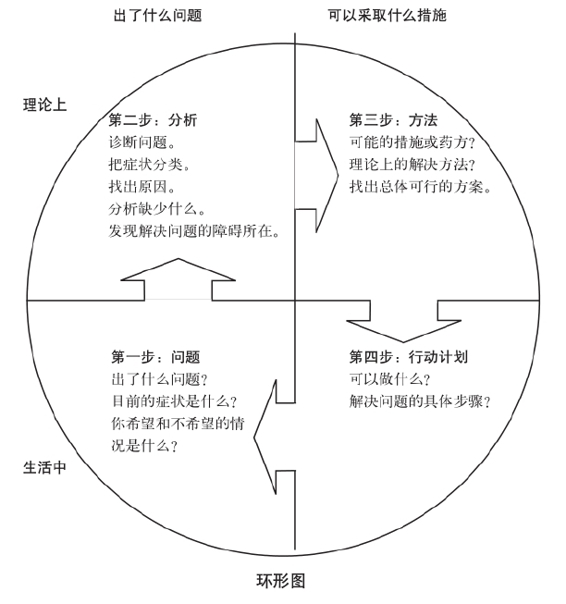

以色列和埃及就如何拥有西奈半岛的谈判既说明了谈判中的一个重要问题，又显示了一个关键的机会。
问题属于人们常见的那种。要想把馅饼切分得让双方都满意似乎不太可能。人们往往从一维的角度进行谈判，比如领土的面积、汽车的价格、公寓租期、某笔销售提取的佣金数额等。有时你所面对的是看似非你即他的利益选择。比如，在离婚协议中，房子归谁？孩子谁养？对你来说，选择也许是关系胜负的抉择，双方都不愿承认失败。即使你赢得谈判，以1.2万美元买下轿车，签订了五年的租约，或是得到了房子和孩子，你也会背负一种对方让你不能忘怀的沉重感觉。不论形势如何，你的选择似乎很有限。
西奈半岛的例子也清楚地表明了机会的重要。类似西奈半岛实行非军事化这样创造性的选择方案，往往会使谈判由僵局转为达成共识。我们认识的一位律师，他把自己的成功直接归功于善于创造对自己的客户和对方都有利的解决方案。他在分割馅饼之前把馅饼做大了。善于创造多种选择方案是谈判者可以拥有的最具价值的一笔财富。
但是，谈判者往往像寓言中争食橘子的孩子那样结束谈判：两个孩子最终决定平分橘子后，第一个孩子拿走一半，吃了橘肉，把橘子皮扔了；第二个孩子扔了橘肉，用他那一半橘子皮烤蛋糕。谈判者往往“把钱留在谈判桌上”，即未能将利益最大化—他们未能达成本应达成的协议，或是未达成本应对双方更有利的协议。大多数谈判结果是平分橘子，而不是一方拿橘肉，一方拿橘子皮。为什么会这样呢？
尽管手里有多种选择方案是非常重要的，但参与谈判的人往往意识不到其必要性。人们在争论中总是认为自己知道正确答案—他们的观点应该占上风。在合同谈判中，他们同样认为自己的提议是合理的，应该被采纳，也许只需对价格作一些调整就可以了。所有的可能结果似乎都在双方立场之间的一条直线上，唯一有创造性的想法通常就是求同存异。
在大多数谈判中，有四大障碍阻止了人们创造多种选择的方案：（1）不成熟的判断；（2）寻求单一的答案；（3）以为馅饼的大小是不变的；（4）认为“他们的问题应该由他们自己解决”。为了克服这些障碍，你必须了解它们。
寻找新方案这种想法来得并不容易。人们的天性是因循守旧，即便脱身于紧张的谈判之外也是如此。假如有人问你，谁最应该获得诺贝尔和平奖，你想到的每一个答案都可能很快遭到自己的异议和怀疑。你怎么敢肯定这个人是最应该受此殊荣的呢？你的脑子也许会变得一片空白，或者你会抛出几个反映传统思维模式的答案：“可能是教皇或是总统吧。”
对创造力最有害的是那种总是抓住一切新事物的不足大做文章的批判意识。评判妨碍了想象力的发挥。
面对即将而来的谈判压力，你的批判意识可能会变得更强。实际谈判需要的似乎是切实可行的想法，而不是凭空想象。
你的创造性可能会由于对方的存在而受到进一步遏制。假设你在和老板商谈自己下一年的薪水问题，你要求增加4 000美元，而老板只同意1 500美元，你对此表示不满。在这种紧张的情况下，你不大可能会想出什么新主意。你可能担心，如果提出加薪2 000美元，另外2 000美元作为额外津贴这种新鲜而不成熟的想法，自己会显得很傻。你的老板也许会说：“别开玩笑。你没有这么傻吧？这会破坏公司的规定。我很惊讶你会有这种想法。”如果你当时想到并提出分几次提薪的可能方案，他也许会认为这是条建议，并说：“我打算在此基础上进行谈判。”由于他会把你说的每一句话当做一种承诺，所以你在说任何话前都应仔细地考虑清楚。
也许你还会担心，由于想出一些选择方案，你可能会泄露对自己的谈判立场不利的信息。比如，如果你建议公司赞助自己买房，你的老板可能会认为你打算继续留在公司，进而以为你最终会接受他提出的任何提薪条件。
在大多数人头脑中，创造并不是谈判中的步骤。人们认为，自己的工作就是缩小双方立场的差距，而不是扩大一切可能的选择方案。他们会想：“我为了取得一致费了那么大的劲，现在最不需要的就是一堆各不相同的想法了。”由于谈判的最终结果只能有一个决定，所以他们担心，漫无边际的讨论只会拖延时间，把事情搞糟。
如果创造性想法的第一个障碍是不成熟的批评，那么第二个障碍就是不成熟的结束。假如从一开始就只是为了寻找唯一最佳答案，你就很容易回避本应有多种选择方案的明智决策过程。
缺乏创造性选择方案的第三种解释是，谈判双方把形势看做是胜负之争，即争论的结果不是我赢就是你赢。谈判往往像是一场“定量”的较量：以汽车价格为例，你多得100美元就意味着我损失100美元。如果所有选择方案明摆着只能以损害我的利益为代价才能满足你的话，那何必费心去创造方案呢？
创造合乎实际的选择方案的最后一个障碍在于，谈判双方考虑的仅仅是自己的眼前利益。如果一位谈判者希望的最终结果能够满足自己的利益需求，那么他就需要找到满足对方利益需求的解决方案。但当一方使问题带上感情色彩的时候，就很难将自己置身事外，并想出能满足双方利益的明智办法：“我们自己的问题已经够多的了，他们可以解决他们自己的问题。”而且，人们往往从心理上不愿承认对方观点的合理性；似乎想办法满足对方利益就是跟自己过不去。缺乏长远目光，只顾自己，导致谈判者只能形成片面的立场，片面的论据以及片面的解决方案。
于是，为了寻求富有创造性的选择方案，你需要做到：（1）将创造选择方案与评判方案二者分开；（2）扩大谈判桌上的选择，不要只寻求唯一的方案；（3）寻求共同利益；（4）找到让对方容易决策的方法。下面对上述步骤分别进行讨论。
由于评判阻碍了想象力的发挥，所以应把创造行为与评判行为分开，把思考可能方案的过程与从中进行选择的过程分开。先创造，再决定。
作为一名谈判人员，你不可避免地会进行许多创造。这并非易事。所谓创造就是要求你找到新想法而不是展现你头脑中固有的东西，因此你有必要考虑安排一次讨论，与几个同事或朋友一起交流想法，各抒己见。这种讨论方式可以有效地将创造与决定过程分开。
集思广益的目的在于对手头的问题找到尽可能多的解决方案，其根本原则是把所有对方案的批评和评价放到以后再说。大家要做的就是创造各种想法，而无须停下来考虑这些想法的好坏或者现实与否。由于取消了那些限制，一个想法会引发另一个想法，就像一串爆竹一样，一个接一个地爆炸开来。
集体讨论时，人们不需担心自己的想法显得愚蠢，因为这里明确鼓励疯狂的想法。而且，由于没有谈判对手在场，谈判者也不必担心泄露机密或者让某一种想法被理解为认真的承诺。
集体讨论没有固定的形式，你可以根据自己的需要和资源进行安排。你在这么做的同时，会发现以下指导原则很有帮助。
在集体讨论之前：
1. 明确你的目的。想想你希望带着什么结果走出会议室。
2. 寻找几个参与者。讨论规模应大到足以产生互动的交流，小到可以鼓励个人的参与以及自由发挥—通常5~8人为宜。
3. 改变环境。挑一个时间和地点，尽可能不同于平常的讨论。集体研讨搞得越是不同于普通会谈，参加者也就越容易把评判放到脑后。
4. 创造一种非正式气氛。怎样才能让你和其他人放松呢？可以边喝饮料边谈，可以在风景优美的度假区谈，也可以就在会议期间解下领带，脱去外套，互相亲切地打招呼。
5. 选一个主持人。会上需要一个主持人—保证讨论不跑题，保证每个人都有发言的机会，遵守一定的原则，并且通过发问激发大家的讨论等。
在集体讨论会上：
1. 让参会人员并排坐在一起，共同面对问题。身体上的靠近能加强心理上的共识。与会者并排坐在一起，可以巩固处理共同问题的心态。面对面坐的人容易从自己的角度出发，进行对话或争执；大家围成一个半圈，面对黑板，则易于回答黑板上写的问题。
2. 明确基本原则，包括不批评原则。如果参与者不是互相都认识，那么讨论可以从互相介绍开始，然后明确会议规则，不允许出现任何形式的负面批评。
共同创造会产生新想法，因为每个人只是在自己观念的限制下进行创造。如果一个想法由于不能获得全体通过就被否决掉，那么讨论的目标无形中就变成寻找反对的方案。而如果鼓励疯狂的想法，包括那些看似完全不可能的想法，人们也许会从这些想法中找到合理可行且以前没有人想到的其他方案。
你想采用的其他基本原则可能还有：整个讨论不做记录，不把每一个想法与任何参会者对号入座。
3. 集思广益，各抒己见。一旦讨论的目标明确后，就发挥你的想象力吧！试着列出一长串想法，从每一个可能的角度接近问题。
4. 记下所有想法，做到一目了然。把所有的想法都记在黑板上，或者最好记在大新闻纸上，这会给大家一种可以感受到的集体成就感。这样做能巩固不批评原则，避免重复，还能帮助激发其他人的想法。
在集体讨论之后：
1. 把最有可能的想法标出来。集思广益结束之后，放宽“不准批评”这条原则，以挑出最有希望的那些方案。你仍然不处在决定阶段，而只是选出那些值得进一步研究的想法，把参与讨论者认为最好的想法标出来。
2. 改进有希望的方案。拿出一个有希望的方案，想办法让它变得更好、更现实，并考虑如何付诸实施。这一阶段的任务是尽量使这个想法具有吸引力。在建设性的批评前加上：“我认为那个想法最可取的是……如果这样会不会更好……”
3. 确定一个时间来评估这些想法，并作出决定。在散会之前，把讨论出的更好的想法列成表，并确定一个时间，商定哪些想法可以用于谈判以及怎样谈判。
考虑与对方开展集体讨论。虽然与己方相比，同对方展开集思广益的讨论要困难得多，但这种讨论也可能极具价值。说它更为困难的原因在于，尽管为集体研讨会规定了种种原则，但你还是很可能说出偏向自己利益的话。你可能会无意中泄露机密或者让对方把你设计的某项选择方案误解为你的建议。尽管如此，双方一起举行集体研讨会的好处在于，产生的想法会充分考虑参与各方的利益，创造合作解决问题的气氛，并能让各方了解对方的关注点。
在与对方进行集体研讨时，为了保护自己，应该把各抒己见与谈判明确区别开来。后者需要陈述正式观点并随时记录说过的话。人们习惯性以为会谈的目的就是为了达成协议，因此任何其他目的需要加以明确说明。
为了避免自己显得过于倾向某一想法，你可以养成一种同时提出至少两个选择的习惯。你还可以提出自己显然不会同意的选择方案，如：“我可以一分钱不要把房子白送给你，你也可以付给我100万美元现金来买房或者……”。由于你明显不会主张这些想法，所以接下来说的话将只是被当做一种可能，而不是建议。
为了让大家体会一下双方一起举行集体研讨会的感觉，让我们假设，本地工会领袖与煤矿资方就如何减少未获批准的罢工问题共同献计献策。有10人参加（各方出5人），围坐在一张桌子旁，面对一块黑板，一位中立协调人询问双方的想法，并在黑板上记录下来。
协调人： 下面让我们看看你们对解决未经批准的罢工问题有什么想法。我们争取在5分钟内写出10条想法。那么，下面开始。汤姆，你先说。
汤姆（工会）： 工头应该能够当场解决某位工会会员的不满。
协调人：很好，我记下来。吉姆，你举手了。
吉姆（资 方）：工会会员应在采取任何行动前把问题告诉工头。
汤姆（工会）：他们说了，可工头不听！
协调人： 请先不要批评，汤姆。我们说好了待会儿再谈这个问题的，好吗？你呢，杰里，好像你有什么想法？
杰里（工会）：当出现罢工问题时，应允许工会会员立即在澡堂碰头。
罗格（资方）：我们可以允许工会使用澡堂开会，也同意为了保证雇员的隐私权，把工头关在门外。
卡罗（资方）：是否可以制定一条规则，规定任何一次罢工前，要先给工会领袖和资方一次当场解决问题的机会。
杰里（工会）：如果工头与工会会员无法解决问题，资方是否可以加速处理工人不满的程序，在24小时内召开会议？凯伦（工 会）：对。是否可以为工会会员和工头共同组织一些培训，教他们如何共同处理他们的问题？
菲尔浦（工会）：如果谁表现出色，应该表扬他。
约翰（资方）： 在工人和资方之间建立一种友善的关系。
协调人： 这个听起来很可行，约翰，你能说得具体些吗？
约翰（资方）：嗯，比如成立一支劳资联合棒球队。
汤姆（工会）：还有保龄球队。
罗格（资方）： 每年举办一次所有家庭参加的野餐怎么样？
就这样，与会人员一下子冒出了很多想法。要不是因为有这样的集体讨论，许多想法也许永远想不出来，其中有些可能对于减少未经批准的罢工很有效。花在集体讨论上的时间肯定是谈判中花得最值的时间。
但不论你们是否在一起进行集体讨论，把形成选择方案与决定方案区别开来，这对于任何谈判都是非常有效的。讨论选择方案与采取立场相去甚远。尽管双方的立场相互冲突，但提出选择方案会带来其他选择。二者使用的语言也不同：讨论方案时，人们用的是询问口气，不是断言；它是开放的，不是封闭的。“一种选择是……你们还有其他什么方案吗？”“如果我们同意这个方案会怎样？”“我们这样办怎么样？”“这种方案是否可行？”“那个方案有什么问题？”先开动脑筋，再作出决定。
即使是完全出于善意，参与集体讨论的人往往抱着寻找最佳方案的想法考虑问题。这么做无异于大海捞针。
因为谈判处在这一阶段时，你的目的不是寻找正确的途径，而是要开创可以谈判的空间。只有通过获得许多截然不同的想法才能开创这种空间—那些可以成为你和对方日后谈判基础的想法，那些你们可以共同进行选择的想法。
酿酒商为了酿出好酒，需要从不同种类的葡萄中挑选满意的葡萄。棒球队为了挑选球星，需要派星探走访全国各地的地方球队和校队。同样的原则也适用于谈判。不论是造酒、棒球还是谈判，明智决策的关键都在于从大量不同的选择中进行挑选。
如果有人问你，今年谁可以获得诺贝尔和平奖，你可以回答：“让我想想”；然后从外交、商界、新闻界、宗教界、法律、农业、政治、学术、医学等领域列出约100个人，而且一定要保证凭空想出一些不切实际的想法；最后以这种方式作出的选择一定比你从一开始就试图决定正确人选要强。
集思广益的讨论解放了人们的思想，可以让人们创造性地去思维。一旦思维冲出束缚，他们需要找到思考问题的方法，找到建设性的解决方案。
在一般和特殊情况之间穿梭，增加选择方案：环形图。创造选择方案包含了四种类型的思维。第一种是考虑某个具体问题—你反感的实际问题，比如屋旁的一条臭水沟。第二种是进行描述性分析—你从总体上对现存的情况进行判断。你把问题分成几类，并试着寻找原因。臭水沟的水可能含有大量化学物质或者缺氧。你可以怀疑上游有各种工厂。第三种思维方式还是从总体出发，考虑也许应该做什么。通过得出的分析结果，你可以对症下药，比如减少化学物品排放，减少河流分支，或者从其他河流引来洁净的水。第四种也是最后一种思维方式是，找出一些具体可行的行动建议。明天该由谁采取什么方法把某项方案付诸实施呢？比如，国家环保机构可以向上游工厂发布命令，限制化学品排放物的数量。
下面的环形图说明了这四种思维模式以及依次实施的顺序。

如果一切正常，以这种步骤创造的具体方案一旦被采纳，就可以解决你最初的问题。
环形图提供了一种简单方法，即用一个好想法来激发其他的想法。在得到一个有效的行动方案后，你（或是正在进行集体讨论的你们）可以回过头来，试着找出基本方法，而手头的这一行动方案只是其中一种适用方案。然后，你可以想出其他行动方案，能将同样的基本方法应用于实际。同样，你可以再退一步问问自己：“如果这种理论方法可行，它背后的原理是什么？”找到了原理，你可以想出其他方法，解决经这一方法分析过的问题，然后寻找将这些新方法付诸实施的行动办法。有了一个好方案，使你可以由此思考方案优越的原理何在，然后用此原理创造出更多的选择方案。
下面举一个例子说明这一过程。在解决爱尔兰冲突问题时，一种想法是，让天主教和新教的教师合作编写关于北爱尔兰历史的教材，用于双方小学教育。这本书可以从不同的观点介绍北爱尔兰的历史，给孩子布置练习，包括扮演角色和把他们放在别人的角度进行换位思考。为了得到更多的想法，你可以先从这一行动建议开始，然后从中找出理论方法。由此，你可能会提出下面的基本建议：
“两种学校体系中应具有一些共同的教学内容。”
“天主教徒与新教徒应该在一些小的可操作项目上共同合作。”
“应该尽早在孩子中间提倡理解。”
“讲解历史应突出双方的不同视角。”
通过这种理论，你也许能够提出其他行动建议，比如由天主教和新教联合制作一部影片，从不同的视角展现北爱尔兰的历史。其他行动想法还有实行教师交流项目，或者在双方教育体系内为小学生开设一些共同课程。
从不同的专家视角看待问题。另一个产生多种选择方案的方法是，从不同的职业不同学科的角度看待自己的问题。
比如，对于儿童监护权的争执，为了寻求可能的解决办法，你可以从一位教育家、银行家、精神病专家、民事律师、部长、营养专家、医生、女权主义者、足球教练或某位有独特见解的人士的角度看问题。如果是有关商业合同的谈判，你可以创造几个可能想到的选择方案，选择的角度可以是一位银行家的，也可以是投资家、工会领袖、房地产投机商、股票经纪人、经济学家、税务专家或是社会学家。
你也可以将这种从不同专家视角看问题的方法与使用环形图结合起来。反过来想想每位专家会如何判断形势，每个人会建议用什么方法解决问题，以及由此应采取什么切实可行的措施。
创造不同力度的协议。如果期望达成的协议无法通过，你可以考虑几个态度不强硬的提议，这样可以增加谈判桌上可能达成协议的数量。如果你们无法就实质性问题达成一致，也许你们可以就程序问题达成共识。如果制鞋商与批发商对于谁应赔偿运输中损坏的鞋互不相让，也许他们会同意将问题提交仲裁。同样，如果无法达成永久性协议，也许可以达成一个临时协议。至少当你与对方不能达成重大协议时，你们通常可以达成次要的协议，也就是同意你们存在分歧。这样，你们双方都会明白争论的焦点所在，而这有时并不是很明显的。下面列出的形容词代表了不同力度的可能协议：
| 较为强硬 | 较为温和 |
|---|---|
| 实质性的 | 程序性的 |
| 永久的 | 临时的 |
| 全面的 | 部分的 |
| 一锤定音的 | 原则上的 |
| 无条件的 | 有条件的 |
| 有约束力的 | 无约束力的 |
| 重要的 | 次要的 |
改变所提出协议的范围。考虑一下是否可能不仅改变协议的力度，也能改变其范围。比如，你可以把问题“分割”成小而好操作的几部分。对可能为你的著作承担编辑工作的人，你可以建议：“先定第1章的编辑费为300美元，看看以后的情况再说。如何？”协议可以是部分的，涉及的当事人可以少一些，可以只考虑经挑选的主要问题，可以只适用某一特定地区，或是只在有限的时间内有效。
另一种激发灵感的方法是，考虑一下如何将主要问题扩大而更具有吸引力。在印度与巴基斯坦关于印度河河水的争执中，世界银行的加入使人们看到解决问题的希望。世界银行谈判双方都要规划新的灌溉工程、新的水库以及其他对两国都有利的工程项目。所有这些都将得到世界银行的资助。
实现创造性地解决问题遇到的第三个障碍是，以为馅饼的大小是固定不变的：你得的少，我就得的多，但这种想法几乎没有一次被证明是正确的。首先，这样会使双方的处境都比现在的情况更糟。国际象棋似乎是一项零和游戏，一方输，另一方就赢。可如果一条狗跑过来，撞翻棋桌，打翻啤酒，这样的结局则使双方都比过去更糟糕。
即使不考虑避免共同损失这一共同利益，共同获益的可能性也总是存在的。其形式可以是建立一种相互有利的关系，或者通过一种创造性解决方案满足各方的利益需求。
明确共同利益。从理论上说，共同利益显然有助于达成共识。根据定义，创造一个满足共同利益的方案对你和对方都有利。然而，实际做的时候就不那么清楚了。一场价格谈判进行到一半时，共同利益就不会显得那么明显或有关系。那么，寻求共同利益有什么帮助呢？
让我们来看一个例子。假设你是一家炼油公司的经理，权且叫它汤山石油公司。公司所在的百威市市长告诉你们，他想将汤山石油公司每年交给市里100万美元的利税增加到200万美元。你告诉他，一年100万美元已足够多了。谈判的问题在于：市长需要更多，而你只愿意按往年的标准支付。在这个典型谈判中，共同利益将扮演什么角色呢？
让我们进一步分析一下市长想得到什么。他需要钱—钱无疑要用在市政建设上，比如新建一个城市广场或减轻普通纳税人的税负。但仅仅从汤山石油公司那里，市里并不能得到现在和将来需要的所有钱，比如说，他们要从街对面的石油化工厂得到所需的资金，将来要从新建或扩建的商业企业得到资金。市长本人也是有商业头脑的，他也希望鼓励工业扩大规模，吸引新的项目，以提供新的就业机会，加速百威市的经济发展。
你们公司的利益何在呢？鉴于炼油技术的飞速变革以及你的炼油厂落后的条件，你目前正在考虑对工厂进行大修，扩充规模。你担心的是，炼油厂扩建后市政府会提高对其价值评估，因此把税提得更高。你还考虑到自己已经吸引一家塑料厂把厂房建在自己公司附近，以方便使用自己的产品。你很自然会担心，一旦塑料厂发现市政府提高税费，他们会改变主意。
现在你和市长的共同利益变得明显多了。你们的一致目标是，加速工业发展，鼓励建立新企业。如果你试着想想满足这些共同目标的方案，也许会想到下面几个：对新企业免税七年，与商会联合举办宣传活动，吸引新公司，对选择扩大发展规模的公司实行减税。这些想法既可以为你省钱，又能充实政府金库。而如果谈判恶化了公司与市政府的关系，结果就会两败俱伤。你可能会中止对城市慈善机构和学校体育事业的赞助，而市政府可能会不通情理地加强建筑条令和其他法规的执行力度。你本人与市政界、商界领袖的私人关系也可能变得不尽如人意。谈判各方关系往往比任何具体问题的结果都重要，但人们经常认为各方关系如何是理所当然的而不予以重视。
作为一名谈判者，你应尽量找到让对方也满意的解决方案。如果顾客感觉在买卖中受骗，那么店老板实际上也失败了。他会失去一位顾客，名声也会受损。对你来说，让对方一无所获的结果比给对方有些安慰要糟糕得多。在几乎所有情况中，你的满意程度取决于该协议让对方感觉满意的程度。
关于共同利益，有三点值得牢记：第一，共同利益潜藏在每项谈判中，它们往往不是即时可见的。你应该问问自己：我们对于维持关系是否存在共同利益？是否有机会进行合作以及共同获益？如果谈判破裂，我们要承担什么损失？我们双方是否存在可以遵循的共同原则，比如一个公平的价格？
第二，共同利益只是机遇，不是天上掉下来的馅饼。要让它发挥作用，你必须对此有所作为。明确提出共同利益，并作为双方的共同目标，这将有助于谈判的进展。也就是说，要把共同利益具体化并面向未来。比如，作为汤山石油公司的经理，你可以把在三年内引进五家新企业作为与市长的共同目标。这样，对新企业的免税政策就变成为实现共同目标的一个行动，而不是市长对你做出的让步了。
第三，强调你们的共同利益可以使谈判变得愉快、顺利。在汪洋大海中，救生艇上的旅客给养有限，但他们为了实现上岸这一共同利益，就得在他们对食品不同需求上做出让步。
融合不同利益。再回到两个孩子争橘子的问题上来。因为两个孩子都想要橘子，所以把橘子平分。他们没有认识到，一个孩子只要吃橘肉，而另一个孩子只要橘皮烤蛋糕。和其他许多谈判一样，由于双方的需求不同，所以才可能达成令双方都满意的协议。想想确实让人吃惊，人们总是以为双方的差异会造成问题，却不知差异也能解决问题。
协议总是建立在分歧基础上。如果让你一开始谈判就在事实上与对方达成共识，那该有多么荒谬！这好比想买股票的人努力说服卖股者股价会涨一样。如果他们真的认为股价会涨，就不会出售股票了。交易成为可能是因为，买方认为股价会涨，而卖方认为股价会跌。双方认识上的差异才促成了这桩生意。
许多富有创造性的协议正是反映了协议产生于差异的原理。利益和信念上的差异使协议可以对你非常有利，而又不需要对方付出什么代价。正如下面这首儿歌所唱的：
杰克·斯普拉特不吃肥肉，
他的妻子非肥肉不吃。
于是两人乐悠悠，
吃光了盘子舔净了油。
最利于双方达成协议的差异类型是利益差异、观念差异、不同的时间观、不同预期和对风险的不同态度等。
利益上有何差异？下面我们列举了一些常见的利益差异：
| 一方更关心的是： | 另一方更关心的是： |
|---|---|
| 形式 | 内容 |
| 经济方面的考虑 | 政治方面的考虑 |
| 内部问题 | 外部问题 |
| 象征意义上的考虑 | 实际的考虑 |
| 即期利益 | 长期利益 |
| 特别结果 | 关系 |
| 物质利益 | 意识形态 |
| 进步 | 尊重传统 |
| 先例 | 现例 |
| 名望、声誉 | 结果 |
| 政治得分点 | 集体福利 |
观念存在差异？如果我认为自己的观点正确，你认为你的观点正确，那么我们就可以利用这一观念差异。我们都会同意由一名公正的仲裁员来解决问题，且各自都相信自己会取得胜利。如果工会中的两派领导人无法就工资问题达成一致，他们可以将问题交由工会成员投票表决。
不同的时间观？你也许更重视现在，而对方考虑更多的是将来的利益。用生意场上的话来说，你们对未来的价值打上不同的折扣。分期付款计划就适用于这一原则。如果可以延期付款，买方就愿意花更多的钱购车，如果卖方能卖到一个高价钱，他就愿意接受延期付款。
不同的预期？在一位已过黄金年龄的棒球明星和一个棒球联赛的主要球队就薪水问题进行谈判时，球星认为自己将在比赛中表现得非常出色，而球队老板却不这么认为。利用这种不同预期，双方可以达成协议—底薪75万美元，如果球星表现出色，平均每场比赛至少得三分，他还可以再得到50万美元的奖金。
对风险持不同态度？最后一项值得强调的区别是，你们对风险的不同态度。以海洋法谈判中有关深海采矿的问题为例。勘探公司为自己享有的勘探权应付给国际社会多少钱呢？勘探公司自然想大捞一把，但更关心的还是如何避免重大损失。对他们来说，深海勘探是一项重要的投资，他们要降低风险。而国际社会关心的则是财政收入。如果某家公司准备从“人类共同的遗产”中大捞一把，那么其他国家也该得到应有的一份。
这一差别中蕴藏着对双方都有利的谈判机会。风险和财政收入之间可以进行交换。利用对风险的不同态度，最后提出的条约规定是，到公司收回投资以前，只征收较低的税率。换句话说，公司风险小时，税率才会提高。
询问对方有何倾向。让利益互相融合的一种方法是，提出几个对你来说都能接受的选择方案，问对方倾向于哪一个。你只需知道对方倾向什么，而不是接受什么。然后，你根据他们所倾向的方案再做进一步调整，再提出两种或更多修改方案，询问对方倾向于哪种选择。这样，无须任何人作出任何决定，你就可以完善一个方案，直到再也找不出任何共同利益为止。比如，棒球明星的代理人可以问球队老板：“哪种方案更能满足你的利益？是连续四年年薪87.5万美元呢，还是连续三年年薪100万美元？后一种方案吗？好，那么你是倾向于连续三年年薪100万美元呢，还是三年年薪90万美元，且如果费尔南多表现出色，平均每场比赛至少得三分，那么每年再加50万美元奖金？
如果一定要用一句话来总结不同利益的相容过程，那就是：寻找对你代价最小，对对方好处最大的方案，反之亦然。双方在利益、考虑问题的主次、观念、预期以及对风险的态度等方面的差异可以相容。一个谈判者的座右铭可以是：“差异万岁！”
既然你在谈判中的成功取决于对方作出让你满意的决定，你就应该尽自己所能让对方轻松地作出那一决定。你要做的不是让对方觉得事情很难办，而是要让对方面临的选择尽可能的简单明了。由于只顾及自己的利益，人们很少注意那些通过照顾对方的利益实现自己利益的方法。为了避免目光短浅，一心只关注自己的即期利益，要站在对方的角度换位思考。如果没有吸引对方的选择，那就可能永无协议可言。
站在谁的角度？你是试图影响某一个谈判者、一位不在谈判现场的老板，还是某个委员会或其他联合决策机构呢？与“加州大学”或“休斯敦”这样的抽象概念谈判，你是不会取得成功的。要想试图说服“保险公司”作出某项决定，你最好集中精力让一位索赔代理人提出建议。无论对方的决策程序多么复杂，只要你挑中一个人（最好是与你正在打交道的人），然后听听他或她对问题的看法，你就会对他们的决策过程有更深刻的了解。
把注意力集中在一个人身上并不意味着你不考虑问题的复杂性。相反，你处理这种复杂性的方法是，理解这些复杂性对谈判对手的影响。也许你可以从某一新角度看待自己的谈判角色、所做的工作，比如，你会认为，自己的做法是在帮助对方，或是给其所需要的理由去说服其他需要说服的人。一位英国大使曾把自己的工作描述为“帮助我的对手得到新的指示”。如果你让自己完全站在对方的角度，就能理解他的问题以及什么样的方案会解决这个问题。
作出什么决定？我们在第2章谈到如何通过分析对方提出的选择来理解他们的利益所在。现在你要做的是，找到可以改变对方选择的选择方案，并让他们作出令你满意的决定。你的任务不是给对方问题，而是给对方答案；让对方作出一个轻松而不是严峻的决定。在此过程中，关键是要把注意力集中在决定本身，而不确定性经常阻碍那一决定的产生。
你总是希望自己得到尽可能多的利益，但自己也不清楚到底应是多少。事实上，你可能会说：“你先说出来，我会告诉你够不够。”这样似乎看起来对你很合理，但如果从对方的角度看一看，你就会懂得提出一个具有吸引力的要求的必要性了。不论对方做什么或说什么，你可能都会认为只是个底价—然后要求更多的东西。如果你总要求对方“主动一些”，你往往不会得到你所需要的决定。
许多谈判者不能肯定自己要的是方案还是实际行动。然而，区分二者是至关重要的。如果你要的是行动，就不要再增加“谈判空间”。如果你想要马跳过栅栏，就不要增加栅栏的高度。如果你想通过零售机以75美分的价格出售软饮料，就不要标价1美元，给自己留有谈判的余地。
大多数情况下，你要的是一个承诺—一份协议。拿出纸笔，试着起草几份可能的协议。用起草协议的方法帮助自己理清思路，这种做法在谈判中永远不会过时。可以准备多种版本，从最简单的可能开始。用什么样的措辞对方才会签字呢？什么样的措辞不但让你满意，又能吸引对方？你可以减少审批协议的人数吗？你能设计一个便于对方执行的协议吗？对方会把执行协议遇到的麻烦考虑进来，你也如此。
比如，阻止还没做的事比阻止一直在进行的行动要容易一些。停止做某事比开始一项全新的行动要简单。如果工人们希望工作时放音乐，那么对于公司来说，同意由雇员放磁带试行几周比接受这一要求要更容易。
由于大多数人受到合理观念的强烈影响，所以，找到让对方容易接受的解决方案的有效途径是，对方案进行稍许加工，让对方觉得合理。当对方觉得自己做事正确时，他们就更容易接受这个方案。所谓正确，即认为是公平、合法、令人自豪的等等。
有先例最能促成决定，所以要努力寻找这样的先例。寻找一个对方在类似情况下作过的决定或声明，并尽量在此基础上提出一个协议，这样就为你的要求提供了一个客观标准，让对方容易接受。意识到对方愿望的连贯性，想想对方做过的事或说过的话，这样可以帮助你拟定你能接受，又能照顾到对方利益的选择方案。
威胁是远远不够的。除了要考虑你希望对方作出的决定内容外，你还应从对方的角度考虑此决定带来的后果是什么。如果你是他们，你最担心出现什么后果？你希望的又是什么？
我们常用威吓或警告的方式来影响别人，告诉他们如果不按照我们的希望去作决定，将会出现什么后果。其实，表示愿意做某事往往更有效。你应该重视两个方面：既要让对方明白，如果他们按照你的希望作决定，将会出现什么结果；又要站在他们的立场改进那些结果。怎样能使自己的承诺更加可信？有什么特定的东西是他们所喜欢的？他们是否希望得到一份最终协议？他们是否希望发布通告？什么办法对你来说代价最小而对他们吸引力最大？
要从对方的角度分析一项选择，就想想如果对方采纳此方案，他们可能会受到什么批评。写一两句话，描述一下你希望对方作出的决定，对此对方最厉害的批评可能会是什么。然后写几句对方可能反驳的话，这样的练习可以帮助你理解对方谈判时受到的制约，可以因此找到充分满足对方利益的方案，让对方作出的决定满足你的利益。
对方案的最后一种检验是把方案以“可同意的提案”形式写出来。试着起草一份对方只用回答“可以”就足以切实可行的方案。如果你能这么做，就减少了你只顾自己的眼前利益而看不到需要满足对方利益所产生的风险。
在复杂的形势下，创造性的设计是完全必要的。在任何谈判中，它都可以将大门打开，产生一系列令双方满意的可能性协议。因此，先想出许多选择方案，然后从中选择；先开动脑筋，再作出决定；寻找共同利益和能够相容的不同利益；尽量让对方的决定变得容易。